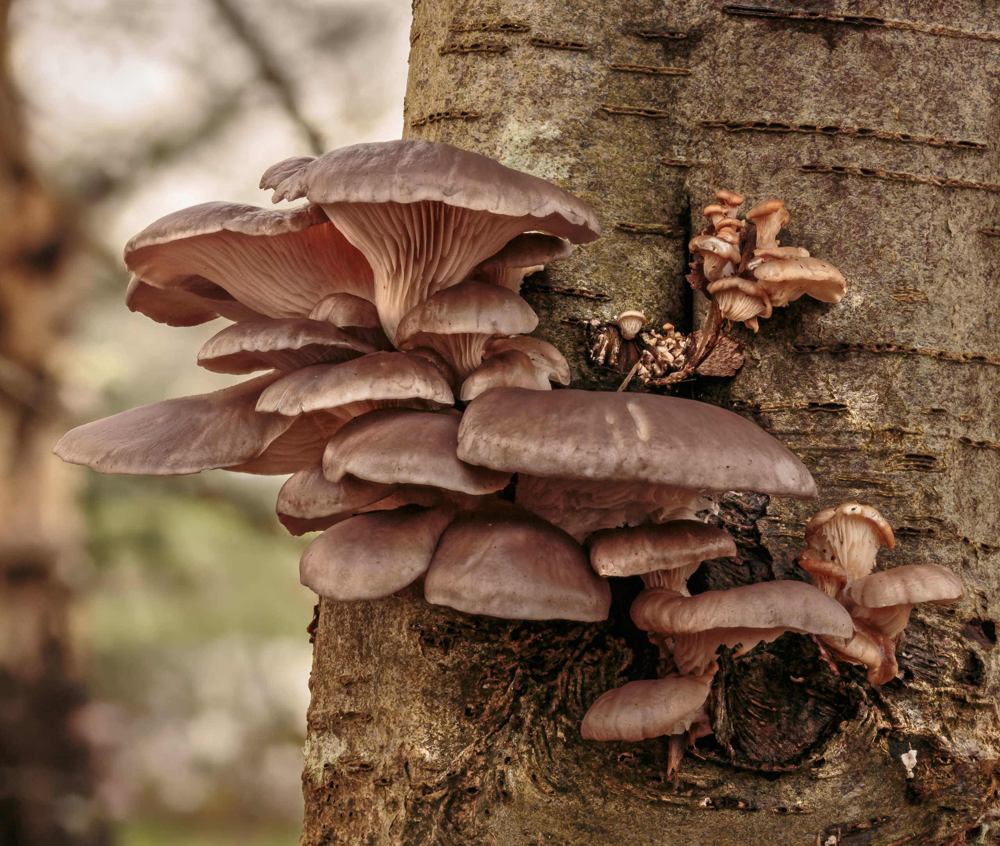
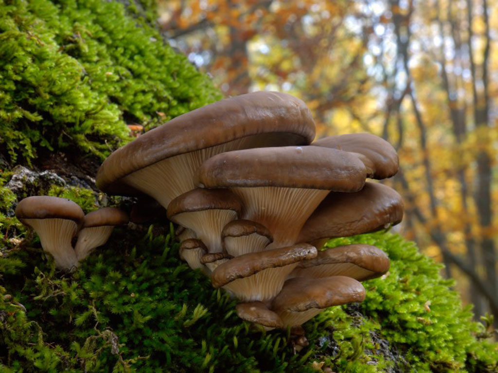

Seta de Ostra
Pleurotus ostreatus


Descripción
La Seta de Ostra es un hongo comestible muy apreciado, que crece sobre madera muerta o troncos húmedos. Su sombrero tiene forma de ostra y es flexible, con colores que van del gris al beige. En Nicaragua se encuentra principalmente en bosques húmedos y plantaciones de madera tropical.
Ubicación en Nicaragua
Se puede encontrar en zonas húmedas de los departamentos de:
- Matagalpa
- Jinotega
- Estelí
- Boaco
- Chontales
- Es uno de los hongos más cultivados en el mundo por su sabor y textura.
- Se puede consumir fresca, salteada o en sopas.
- Crece rápidamente y puede formar colonias extensas sobre troncos.
- Tiene propiedades nutricionales importantes, con proteínas y vitaminas.
- Se le llama "de ostra" por la forma característica de su sombrero.
- Comestible: Excelente en cocina local e internacional.
- Nutricional: Rica en proteínas, minerales y vitaminas.
- Educativo: Usada en estudios de micología y ecosistemas forestales.
- Cultivo doméstico: Fácil de cultivar en troncos o bolsas de sustrato.